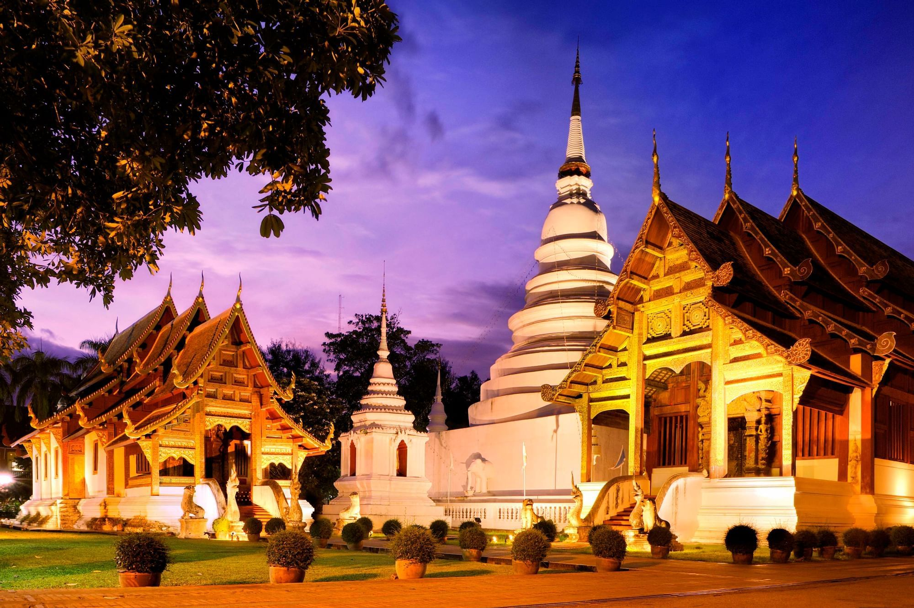

วัดพระสิงห์
วัดพระสิงห์เป็นวัดสำคัญของเชียงใหม่ ตั้งอยู่ภายในคูเมือง มีพระพุทธสิหิงค์อันศักดิ์สิทธิ์ เป็นจุดศูนย์รวมจิตใจของชาวล้านนา

ข้อมูลทั่วไปของดอยอินทนนท์
- ที่ตั้ง: ถนนสามล้าน ตำบลพระสิงห์ อำเภอเมืองเชียงใหม่ (ในเขตคูเมืองเก่า)
- ประวัติ: สร้างขึ้นในสมัยพญาผายู ราว พ.ศ. 1888 เพื่อประดิษฐานพระอัฐิของพ่อ
- ความสำคัญ: เป็นพระอารามหลวงชั้นเอก และเป็นวัดประจำปีเกิดปีมะโรง (งูใหญ่) ตามคติล้านนา
ไฮไลต์ของวัดพระสิงห์
- 1.พระพุทธสิหิงค์
- - พระพุทธรูปศิลปะสุโขทัยผสมล้านนา
- ประดิษฐานในวิหารลายคำ
- อัญเชิญออกมาให้ประชาชนสรงน้ำทุกปีในช่วงสงกรานต์
- 2.วิหารลายคำ
- - วิหารเก่าแก่ผนังปิดทองลวดลายสวยงาม
- มีจิตรกรรมฝาผนังเล่าเรื่อง สังข์ศิลป์ชัย และวิถีชีวิตล้านนาโบราณ
- 3.เจดีย์ทรงระฆัง
- - เจดีย์ใหญ่สีทองตั้งอยู่กลางวัด
- - เป็นศิลปะแบบสุโขทัยผสมล้านนา
- 4.หอไตร
- - อาคารเก็บพระคัมภีร์ทางพุทธศาสนา
- - สถาปัตยกรรมล้านนาที่งดงาม
การเดินทาง
- จากตัวเมืองเชียงใหม่: ประมาณ 100 กม. ใช้เวลาประมาณ 2–2.5 ชั่วโมง
- รถยนต์ส่วนตัว (ควรเช็กสภาพเบรกและน้ำมันก่อนขึ้นดอย)
- รถสองแถวสีเหลืองจากตลาดจอมทอง
- รถเช่า (ควรเลือกแบบเครื่องแรงพอสำหรับทางชัน)
ข้อควรรู้
- บริเวณยอดดอยอากาศหนาวมาก ควรเตรียมเสื้อกันหนาวแบบหนา
- นักท่องเที่ยวควรออกเดินทางแต่เช้า เพื่อมีเวลาเที่ยวหลายจุด
- ฤดูที่เหมาะที่สุด: ฤดูหนาว (พ.ย. – ก.พ.)
- หลีกเลี่ยงการใช้เสียงดัง และดูแลความสะอาดในเขตอุทยาน
- ค่าธรรมเนียมเข้าอุทยานสำหรับชาวไทยและต่างชาติแตกต่างกัน